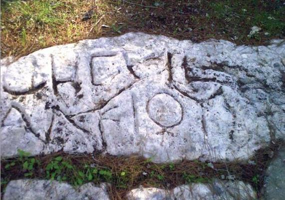

Joshua 16 — The Mister Translation

One of about a dozen boundary stones cut into bedrock around ancient Gezer, each carrying the same two-line formula: Hebrew techum Gezer, ‘boundary of Gezer,’ the same noun this chapter's own gevul dictionary entry has tracked since Deuteronomy, over a Greek line naming a certain Alkios. ⚠ The stones are Hasmonean or early Roman, cut roughly a thousand years after this chapter's own survey (dated 150 BC–AD 70 by their lettering) and mark a private estate's rural limit, not the city wall itself — but they are the closest thing that survives to this chapter's own vocabulary carved in stone: a border, named as a border, at the one city this chapter admits Israel never actually took.

★★★ This chapter's own opening verb is the first thing it has to say about Ephraim, and it says it by not matching Judah's. ‘And the lot went out,’ vayetse ha-goral, stands in six verses of the Hebrew Bible — this one, two more tribal lots later in this same book (Simeon at 19:1, Asher at 19:24), the Levitical Kohathites’ at 21:4, and twice among the priestly courses of 1 Chronicles (24:7; 25:9, neither yet on these pages). ‘And the lot WAS,’ vayehi ha-goral, by contrast, stands in exactly two: Judah's own opening at Joshua 15:1 and Manasseh's at Joshua 17:1 (both now on these pages) — this project's own goral dictionary entry already flagged the pair as the one place the casting verb itself, rather than a summary, actually opens a district list. Ephraim, the brother Jacob's crossed hands put ahead of Manasseh at the blessing (Genesis 48:14, already on these pages), draws the ordinary verb here; Manasseh, Joseph's actual firstborn, draws the rare one two chapters from now, matching Judah's own. If the two-verb split tracks anything, it is birth order rather than the blessing's own order.
★★ The border runs ‘from Bethel to Luz’ at v2 without the three words Genesis twice uses to say the two names are one place. Genesis spells it out at both of its own Bethel-namings — Jacob ‘named that place Bethel; but Luz was the name of the city before’ (Genesis 28:19, already on these pages), and later, ‘Jacob came to Luz… that is, Bethel’ (35:6, already on these pages; Genesis 28 has not yet shipped in Spanish, where this gloss is one chapter short of this chapter's own Spanish twin). The directional form this verse uses for Luz, with the same -ah ending this very chapter puts on ‘seaward’ and ‘northward,’ reads as a place name in three verses of the Hebrew Bible — Genesis 35:6 and Joshua 18:13 (Benjamin's own border, now on these pages) both pair it with the identical gloss, ‘that is, Bethel’; this verse is the one of the three that does not. The shelf splits along that exact seam: NIV and NVI import the other two verses’ own gloss and print Bethel and Luz in apposition, one place; every other witness fetched for this chapter — ASV, KJV, Geneva, Douay-Rheims, TLB, and both RV 1909 and RV60 — keeps the Hebrew's own bare movement from one place to the other, with no apposition, and leaves a reader to wonder whether one town or two is meant. This translation keeps the bare form: the harder reading is the one the Hebrew text in front of this verse actually gives, and Genesis has already supplied the gloss twice elsewhere for a reader who needs it.
★★ ‘The border of the Archites’ (v2) names a clan that surfaces only one other place in the whole Bible — all five further verses about one man, three centuries later. ‘The Archite,’ ha-Arki, stands in six verses of the Hebrew Bible: this one, and five naming Hushai the Archite, David's loyal friend, whose counsel to the rebel Absalom undoes Ahithophel's own and buys David the time to cross the Jordan (2 Samuel 15:32; 16:16; 17:5, 14; 1 Chronicles 27:33; none yet on these pages). A border marker here, a king's own life saved there — the same six letters, four hundred years apart.
★ Verse 4 states in five words what Genesis spent a whole chapter arranging: Joseph himself never gets a lot, because his two sons divide his one portion between them. Jacob had already adopted Ephraim and Manasseh as his own sons, ‘as Reuben and Simeon’ (Genesis 48:5, already on these pages) — the quiet legal mechanism behind why ‘the sons of Joseph’ rather than ‘Joseph’ draws this chapter's own lot, and behind why Joseph's own name never heads a tribal territory anywhere in this book. 1 Chronicles 5:1–2 (not yet on these pages) states the reason outright: Reuben's own birthright, forfeited for defiling his father's bed, ‘was given to the sons of Joseph.’
★★ Michmethath (v6) is the one landmark this chapter and next both use to describe the same line from opposite sides. The name, spelled with the definite article as this verse spells it, stands in exactly two verses of the Hebrew Bible — here, marking Ephraim's own northern border, and at Joshua 17:7 (now on these pages), marking Manasseh's southern one at the identical point, ‘facing Shechem.’ Two neighboring surveys, run by two different hands, agree on the one name either bothers to repeat.
★ Taanath-shiloh and Naarah are each named exactly once in the whole Hebrew Bible, and both are named here. Neither recurs in Joshua 17's own parallel survey of Manasseh, nor anywhere else on these pages or off them; this chapter's own interior border, unlike the landmarks it shares with its neighbor, runs for a stretch through country no other biblical writer ever has occasion to mention again.
★★★ Verse 9 reports, from one side only, an arrangement its own chapter will not finish explaining until next door. ‘Set apart,’ ha-muvdalot, a passive participle built on the ordinary verb for dividing one thing from another, stands in exactly one verse of the whole Hebrew Bible — this one. Joshua 17:9–10 (now on these pages) describes the identical arrangement from Manasseh's own side of the line, naming the same brook of Kanah this chapter has just used to close Ephraim's own border at v8, and stating outright that Manasseh's border ran north of that brook while towns south of it — inside Manasseh's own nominal territory — belonged to Ephraim. One stretch of ground, two tribes’ own surveys, four verses and one chapter apart, and this translation lets both descriptions stand rather than folding them into a single map neither chapter actually draws.
★★★ This verse's closing two words are the Bible's own phrase for a failed conquest's fallback policy, and the exact phrase occurs only twice more — once as a blessing, and once as an institution. ‘A servant for forced labour,’ le-mas oved, stands in exactly three verses of the whole Hebrew Bible: Jacob's deathbed description of Issachar, who ‘saw that rest was good… and became a servant for forced labour’ (Genesis 49:15, already on these pages) — not a verdict on a failed war but a character sketch, a tribe that prefers a quiet valley to a fight; this verse, the first time the fallback is actually imposed on anyone; and Solomon's census of every Canaanite remnant ‘the children of Israel were not able to destroy utterly,’ whom he ‘raised… to be a servant for forced labour, to this day’ (1 Kings 9:21, not yet on these pages) — the same unfinished conquest, centuries on, turned from an admitted failure into a standing labour tax. This project's own mas dictionary entry already flagged that the word itself would arrive here and at 17:13; what it had not yet traced is that this verse alone, of every place the policy gets applied across Joshua and Judges, carries the Genesis phrase whole, while 17:13 and Judges’ own fourfold refrain (1:28, 30, 33, 35) all shorten it to the bare noun.
★★ Judah's failure to take Jerusalem closed last chapter blamed on the wrong tribe when Judges repeats it; Ephraim's failure to take Gezer closes this one blamed on the right one. Judges 1:21 (already on these pages) reports Jerusalem's Jebusites as Benjamin's own failure, not Judah's, though Joshua 15:63 (now on these pages) named Judah; Judges 1:29 (already on these pages), by contrast, names Ephraim for Gezer in words close enough to this verse to be the same report filed twice. Two chapters, two failed sieges, and only one survives into the next book under its own tribe's own name.
⚠ The shelf splits on how far ‘a servant for forced labour’ goes toward outright slavery, in both languages. NWT 1984 prints ‘subject to slavish forced labor’; KJV chooses ‘serve under tribute,’ without the labour, and Douay-Rheims ‘paying tribute’; ASV keeps ‘servants to do taskwork’ and Geneva ‘served under tribute’; NIV names it outright, ‘forced labor,’ and TLB goes further, ‘slaves.’ The Spanish shelf splits the identical way: RV 1909 and RV60 both print ‘tributario’; the NVI alone prints ‘la esclavitud.’ This translation keeps the Hebrew's own two-word construction whole, ‘a servant for forced labour’ — the identical choice this project made the one other time the phrase occurs, at Genesis 49:15.
Echoes paid. This project's own mas dictionary entry's forecast that the word would arrive at 16:10 and 17:13 is confirmed at v10, in its fuller two-word form; the shorter refrain still waits for next chapter. The goral dictionary entry's own note on Joshua 14's handoff to Joshua 15's casting verb is extended: this chapter's own lot is cast with a third, more common verb, tracking Ephraim's own place in Jacob's crossed blessing rather than Judah's rank. Judges 1:29 (already on these pages) is the Bible's one other report of Gezer's Canaanites and Ephraim's own failure to drive them out — the same tribe keeping the same verdict, unlike Jerusalem's Jebusites one chapter back.
Echoes paid, a chapter early. Joshua 17:1 (already on these pages) already carries the rarer casting verb back, this time for Manasseh, matching Judah's own. Joshua 17:7 already has Michmethath mark the identical border from the other side. Joshua 17:9–10 already has Manasseh's own survey name the same brook of Kanah and state outright that the towns this chapter calls Ephraim's enclave sit inside Manasseh's own nominal line. Joshua 17:13 already carries the shorter tribute formula this verse's fuller one anticipates, becoming the refrain Judges 1 repeats four times over.
Echoes planted. Joshua 18:13 is where Benjamin's own border runs past Luz a second time, this time with the gloss this chapter's own v2 leaves out. 1 Kings 9:21 (not yet on these pages) is where Solomon applies this verse's exact two-word phrase, last used here and at Genesis 49:15, to every Canaanite remnant left in the land. 2 Samuel 15–17 (not yet on these pages) is where the Archites of v2 produce their only other namesake, Hushai, whose counsel undoes Ahithophel's and saves a fleeing king.
Decisions. Hebrew and English verse numbers align through the whole chapter, with no versification shift. Gevul is ‘border,’ matching this project's standing rendering since Deuteronomy 19. Nachalah is ‘inheritance,’ matching the standing rendering since Numbers. Bethel is kept unhyphenated, matching this project's own spelling since Genesis 12. The directional form of Luz at v2 is kept bare, ‘to Luz,’ without importing the ‘that is, Bethel’ gloss Genesis supplies twice elsewhere and Joshua 18:13 will supply again, on the harder of the two shelf readings. Mas oved at v10 is ‘a servant for forced labour,’ kept as the two-word construction the Hebrew gives rather than shortened to a single noun, matching this project's own rendering of the identical phrase at Genesis 49:15. The Masoretic text marks a single petuchah, after v10, closing the chapter's own district survey; no break interrupts the survey itself.
Library. Two new encyclopedia entries in both languages: Ephraim and Bethel, both named constantly before this chapter and given their own entry only now. Four existing encyclopedia entries extended, each in both languages: Joseph (its own stale ‘not yet on this site’ notice corrected, now that Genesis 37–50 have shipped), Manasseh, Gezer (its own forward reference to this verse fulfilled) and Tappuah (its own forward reference to v8 fulfilled). Two existing dictionary entries extended, each in both languages: goral (the vayetse/vayehi verb contrast) and mas (the fuller two-word form this verse carries, against next chapter's shorter one). No new dictionary entries. No new entries for the Archites, Japhletites, Ataroth, Michmethath, Taanath-shiloh, Janoah or Naarah — bare survey names, matching how this book's own border chapters have already left the great majority of theirs unlinked.
⚠ A note on order: Joshua stands on these pages at chapters 1–20, and at Judges 1:8, 13, 21 and 29 out of sequence. Joshua 21–24 remain the open sequence; next in this book is Joshua 21, where the heads of the Levites come to Shiloh to ask for the cities that Jehovah commanded by the hand of Moses.